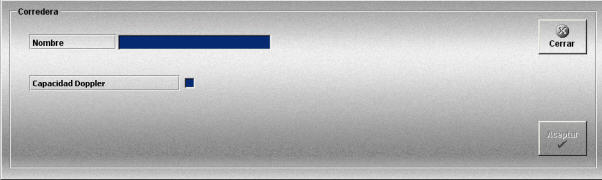

Corredera
La creación y edición de correderas se realiza mediante la siguiente ventana.

Esta ventana permite definir los equipos Corredera que podrán ser añadidos a las unidades participantes en los Ejercicios.
Para cada Corredera se definen los siguientes datos:
Nombre: Nombre de la corredera.
Capacidad doppler: Cuando este campo se marca, la corredera tiene capacidad doppler.